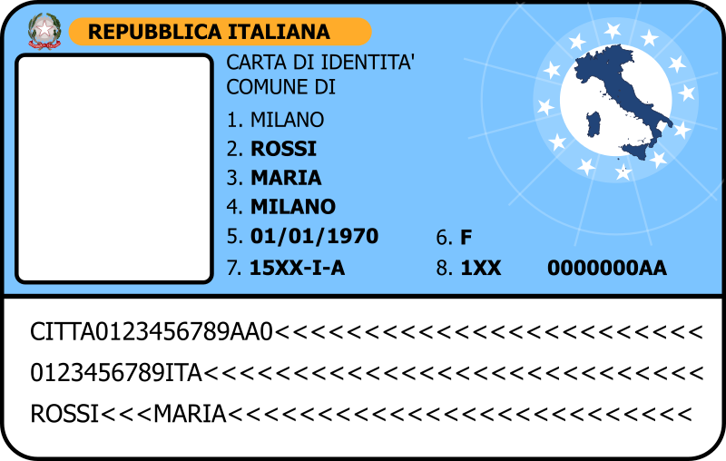

Live DevLog
| 02 Feb 2018 |
| 15:32:12 | DONE |  Ryanna should now kick the enemy Ryanna should now kick the enemy |
| 15:23:26 | LICENSE | Up-to-date |
| 15:21:01 | JUDGMENT |  Looks good at last! Looks good at last! |
| 14:43:33 | FIXED |  "Nil" comparasion "Nil" comparasion |
| 14:41:01 | FIXED | Nil reference |
| 14:34:29 | FIXED | And another one |
| 14:34:24 | FIXED | Problem fixed |
| 14:27:36 | DEBUG |  Source checkups tell me what the computer claims is impossible, so let's add some extra debug info to find out what is happening here! Source checkups tell me what the computer claims is impossible, so let's add some extra debug info to find out what is happening here! |
| 14:24:16 | BUG |  A nil value that cannot exist.... Let's find out how come...? A nil value that cannot exist.... Let's find out how come...? |
| 14:20:58 | FIXED | Fixed that issue |
| 14:19:32 | BUG | Well the error I get now was only possible when the previous bug was fixed, but this is a new bug :P |
| 14:19:14 | FIXED | Now THIS looks more like it |
| 14:17:21 | SOLVED |  I hope this gets things on the move I hope this gets things on the move |
| 14:14:00 | DEBUG | Well? |
| 13:54:59 | COCKROACH |  Still being ignored and the logs appear to confirm this.... :-/ Still being ignored and the logs appear to confirm this.... :-/ |
| 13:50:12 | SOLVED | I think I found the source of "evil" |
| 13:40:39 | COCKROACH | Or not? |
| 13:38:12 | FIXED | Ignore problem fixed |
| 12:54:59 | DEBUG | This approach should stop that |
| 12:54:49 | DEBUG | I should have known this would case a cyclic loop and why |
| 12:48:13 | FIXED | Illegal table index |
| 12:44:52 | DEBUG | This is a pretty "brutal" way to check it out, but hopefully it does produce some results. |
| 12:43:49 | DEBUG | Right, at least I can tell it's the "posing" subflow where it goes wrong.... At least I can be sure to rule out the waiting pose |
| 12:40:42 | NOTE |  That doesn't fix the bug, though :-/ That doesn't fix the bug, though :-/ |
| 12:40:32 | FIXED | Case error |
| 12:35:28 | DEBUG | I hope this debug routine will tell me why |
| 12:33:37 | BUG | Nothing is happening at all.... Let's investigate |
| 12:31:06 | FIXED | Case Error Causing Nil Value |
| 12:26:38 | STATUS |  Technically this *CAN* be tested, the game should freeze after the jump though, although the quit feature and my debug console should still work ;) Technically this *CAN* be tested, the game should freeze after the jump though, although the quit feature and my debug console should still work ;) |
| 12:26:03 | DONE | Jumping to the enemy should work now |
| 12:21:00 | CONFIG |  Automated movement calculation based on the steps (now 10, but easy to change) and the distance. Automated movement calculation based on the steps (now 10, but easy to change) and the distance. |
| 12:15:34 | CONFIG | Distance pre-calculation |
| 11:38:00 | ENHANCEMENT |  I worked this out to make this jumping also possible for multi-target moves, something I was not originally planning to do. I worked this out to make this jumping also possible for multi-target moves, something I was not originally planning to do.
Fun part, the jump will be adapted if there's only one target left to do the multi-target move on.... |
| 11:36:48 | CONFIG | Position based on target |
| 11:21:31 | DONE | Set up a system checking if the character should jump to the enemy or not |
| 01 Feb 2018 |
| 20:47:38 | OFFTOPIC |  I took a day off mind you? I took a day off mind you?
|
| 31 Jan 2018 |
| 17:10:28 | SCRIPT |  Pose flow skeleton set up Pose flow skeleton set up |
| 16:55:29 | SCRIPT |  The execution flow manager has been set up The execution flow manager has been set up |
| 16:44:54 | OFFTOPIC | Well,you gotta forgive me work is not going very fast today. First of all, this is complex stuff, so I need to take my time.
Second, I've just been notified of a horrible tragidy taking place in the life of somebody I know and care about, so I'm a bit in a shock... |
| 16:36:58 | FIXED | That's been fixed |
| 15:19:12 | BUG | A data error spotted in Ryanna's attacking animation |
| 15:15:59 | DONE | #39 |
| 15:15:56 | DONE | #36 |
| 15:15:37 | TODO |  #39 #39 |
| 15:07:47 | ART |  Prepared for use in the game Prepared for use in the game |
| 14:10:50 | ART | Ryanna Attacking pose |
| 11:28:33 | FIXED | Name of the action now appears |
| 11:24:54 | DONE | I removed the card... that takes care of the freeze up but I REFUSE to speak of a fix, and all I can do is deliberately bug it and this bug is even seen by the players. |
| 11:17:29 | BUG | EVERYTHING stops... even the card gauge does... But yet, the cmd-Q command of mac to quit the game works, as well does the call the the debug console, and that is pretty strange |
| 11:12:10 | FIXED | Illegal function call |
| 11:05:43 | FIXED | Case error |
| 11:05:37 | CONFIRMED |  Last fix confirmed Last fix confirmed |
| 11:03:45 | FIXED | Fixed? |
| 11:02:36 | BUG | configuration error |
| 10:59:41 | DONE | The name of the move plus the card based on the one executing it shoud display now |
| 10:58:58 | SCRIPT | Skeleton for the execution of moves |
| 10:24:53 | TODO | #38 |
| 10:20:47 | NOTE | Which will for now crash the game, but that's because there's a linkup to non-existent code now.
That will of course be taken care of now ;) |
| 10:20:15 | LINK | Linkup to the execution flow set up |
| 10:10:35 | CONFIG | A bit more setup on the move the player enters |
| 30 Jan 2018 |
| 21:35:00 | STATUS | Well, the next step is to make Ryanna able to actually EXECUTE her attack. This can be quite hard to fully accomplish and also a lot of work. First of all I need to animate Ryanna in her attacking poses. The plan is there to make Ryanna actually jump to the enemy to do her attack (and the other character will also do that if this work), however this might be harder to execute than you might think, so this is not yet decided. The plan is also to make Ryanna kick the enemy, and that will require an animation style new to me, so I might scrap that idea too.... After that comes the attack itself, and most of all the countless mountain of mathematical formulas to calculate all the effects and the entire flow set up to make sure it happens as intended. I don't think one day is enough to cover that all up, however once this part has been done, then healing spells and other kinds of abilities will be a lot easier.... Well with the exception maybe of Ryanna's transformation, but that is a later concern :P |
| 21:30:28 | NOTE | I do have some ideas for #34 |
| 21:29:36 | CLOSED |  #37 #37 |
| 21:29:14 | CONFIG | Extra config is needed there, or so it seems ;) |
| 21:28:53 | BACKUP |  Is Running Is Running |
| 21:26:10 | GITHUB |  Up-to-date Up-to-date |
| 20:36:18 | CONFIRMED | Fix confirmed |
| 20:33:50 | STUPIDITY |  Boy, do I feel stupid now! Boy, do I feel stupid now! |
| 20:33:41 | FIXED | Fixedit |
| 20:31:51 | COCKROACH | What is the reason why it refuses to work without a reason? |
| 20:29:40 | BUG | The system is ignoring me on an important thing |
| 20:24:43 | FIXED | Code order |
| 20:23:01 | FAILURE |  Wrong start Wrong start |
| 20:20:24 | DONE | Target selection can now be cancelled |
| 19:13:20 | CONFIRMED | Okay, all's fine now |
| 19:09:27 | COSMETIC | A little work out on the HP bar when it *is* shown |
| 19:07:12 | FIXED | That has been fixed now! |
| 19:07:07 | STUPIDITY | Okay, that wasn't very smart |
| 19:04:08 | DONE | The target's health bar will be shown in accordance of the chosen difficulty setting and game state |
| 13:03:04 | FIXED | YES! OH YES! YES! 
|
| 12:50:12 | COCKROACH | GRRR! |
| 12:46:58 | DEBUG | A little bit more debugging |
| 12:40:21 | DEBUG | I hope this debug command can tell me why the enemy data is ignored |
| 12:30:53 | FIXED | Case error |
| 12:13:46 | FIXED | It's fixed! |
| 12:13:29 | STUPIDITY | Urght |
| 12:04:46 | FIXED | that should fix th ebug the markers I mentioned earler were set up for |
| 12:04:27 | FIXED |  Hotspot error Hotspot error |
| 11:56:30 | DEBUG | I've set up some debug markers which have to tell me why targets are not properly selected when they should be |
| 11:50:53 | FIXED | Bugs beyond counting |
| 11:45:53 | FIXED | Code Typo |
| 11:39:49 | BUG | Targets appear to be ignored or is it just me? |
| 11:35:01 | ENHANCEMENT | Yellow |
| 11:32:18 | FIXED | Illegal function call |
| 11:30:02 | DONE | The name of the selected target appears.
That is for now ALL that will happen |
| 11:19:47 | FIXED | Boolean checkup error |
| 11:18:09 | DONE | System now able to determine if a target has been selected, however this will not yet have any visual effects |
| 11:16:24 | TODO | #36 |
| 11:15:13 | TODO | #35 |
| 10:55:31 | CONFIG | Expansion of fighter data |
| 10:47:40 | ENHANCEMENT | Support for parameters in click callbacks |
| 10:41:46 | DONE | Skeleton Script for target selector |
| 29 Jan 2018 |
| 19:55:44 | TODO | #34 |
| 19:46:10 | LOVE2D |  Game announced on the LÖVE forum Game announced on the LÖVE forum |
| 19:10:45 | CONFIRMED | Help Text Works |
| 17:03:22 | COSMETIC | Sped up the card flow |
| 16:52:18 | CONFIRMED | Both fixes confirmed |
| 16:49:42 | FIXED | Height of combat items |
| 16:48:37 | FIXED | LuaLibs/RyannaLibs#7 -- Although a test has to confirm this |
| 16:45:45 | BUG | LuaLibs/RyannaLibs#7 -- It's been annoying me for quite awhile now |
| 16:44:21 | CLOSED | LuaLibs/RyannaLibs#6 |
| 16:37:21 | NOTE | No I will not scoop to the level you have to be dumb to be unable to understand them, and neither should you! |
| 16:36:50 | TUTORIAL | Help text for combat menu items |
| 16:28:52 | DONE | Mouse detection set up in combat main menu |
| 13:26:08 | SCREENSHOT |  |
| 13:10:17 | COSMETIC | Attack menu too large in up-down ratio |
| 13:07:08 | FIXED | Color Issue |
| 13:03:07 | FIXED | An act of total stupidity |
| 13:00:53 | SCRIPT | Base setup for the combat player input base menu |
| 10:47:48 | LICENSE | up-to-date |
| 10:46:12 | GAMEJOLT |  Kicked out some spambots.... work work work! Kicked out some spambots.... work work work! |
| 10:44:00 | NOTE | as that section does not yet exist, this *WILL* cause the game to crash, yes |
| 10:43:44 | DONE | Script set to link to the player input |
| 10:22:01 | SOLVED | I think I found it.... |
| 10:18:34 | BUG | For some reason, the idle flow removes all first cards regardless if they had to be removed |
| 10:08:10 | DONE | The "idle" flow has been set up |
| 28 Jan 2018 |
| 21:48:25 | LOVE2D | Pretty soon the project will also be announced on the http://love2d.org
|
| 21:47:19 | STATUS | I also gotta note that the days I've less time will now arrive, however some things can be done now, so doncha worry.... |
| 21:42:31 | BACKUP | This will start soon |
| 21:42:16 | STATUS | You gotta note, that there is no battle flow yet, so cards will not be removed even if they have to be, this will (of course) change soon, but the work that requires in coding and debugging is gonna take more than I can spare now.... |
| 21:41:36 | NOTE | I need to end this session right now, meaning I cannot test if this works |
| 21:40:58 | LINK | Sound linked to the card removal routine, so the sound will sound at every card being removed now.... (in TFT this is officially bugged as cards not empty didn't produce the sound, but I doubt anybody every noticed that) :P |
| 21:40:02 | RYANNA |  Routine adapted to loading from JCR through the Ryanna core Routine adapted to loading from JCR through the Ryanna core |
| 21:36:17 | ENHANCEMENT | A quick load & play routine for regular sound effects has been put in |
| 21:35:37 | RYANNA | Imported the library needed to quick audio access |
| 21:26:45 | SCRIPT | Card removing routine |
| 21:18:15 | FIXED | A quick hotfix of a fault that may not have damaged anything now, but which could damage stuff later in the game's progression. |
| 21:13:45 | RYANNA |  Project file updaated Project file updaated |
| 21:02:28 | AUDIO |  Ready Ready |
| 21:01:57 | AUDIO | Card Slide |
| 11:30:43 | SOLVED | I think I found it |
| 11:27:46 | DEBUG | So let's find out what hurt it so |
| 11:27:37 | BUG | And Lua starts to whine.... ALways bother some |
| 11:24:04 | FIXED | Of course I fixed that now |
| 11:23:56 | STUPIDITY | But methods are called with : in Lua and now with . and that's how it got malfunctioning |
| 11:23:37 | DEBUG | The debug log showed everything was in order |
| 11:21:23 | DEBUG | Let's see what'shappened |
| 11:21:08 | BUG | A "nil" error pops up and that cannot be possible unless some vital instructions have been ignored.... |
| 11:20:50 | DONE | Ryanna Should appear now |
| 10:54:46 | STATUS | My prime concern for now is to make Ryanna appar in combat.... Since I always have little time on Sunday, I'm afraid that's all i can do for today |
| 10:48:50 | JUDGMENT | Yup, this looks a lot better! |
| 10:45:00 | TODO | #33 |
| 10:44:11 | ART | Generated new enemy cards, as the TFT ones were too big |
| 09:15:27 | CONFIRMED | Stuff's been verified! |
| 09:13:20 | ART | Ryanna Combat Idle |
| 27 Jan 2018 |
| 22:26:07 | SCREENSHOT |  |
| 22:21:00 | FIXED | Card Y Issue |
| 22:16:56 | FIXED | The middle of the screen was not taken into account in enemy placement |
| 22:16:43 | CONFIRMED | That works... Almost |
| 21:59:52 | NOTE | I'll have to wait before I can test this though, due to a few things to take care of first! |
| 21:59:33 | FIXED | This should be fixed now |
| 21:59:22 | STUPIDITY | Okay, I now realized why the enemies did not appear |
| 20:24:21 | BACKUP | Is Running |
| 20:23:53 | STATUS | I'm only out of time to work on the game for now, so that'll have to be done later |
| 20:23:34 | BUG | But the enemies do NOT appear, so I'll have to find out why that is |
| 20:19:27 | DONE | Set up the routine that puts the enemies onto the field |
| 20:03:50 | NOTE | Seeing that I made Ryanna a small card, like the others I guess it'll be the FOE card that needs a little remake.... |
| 20:00:54 | SOLVED | I found out what causes that |
| 19:59:41 | DUMP | Defining card: 3
card[3] = {
["y"] = 3280,
["x"] = -25,
["data"] = {
["tag"] = "Ryanna",
["group"] = "Hero"
}
}
Defining card: 3
card[3] = {
["y"] = 3280,
["x"] = -25,
["data"] = {
["letter"] = "A",
["group"] = "Foe",
["tag"] = "FOE_1"
}
} You see the foe card overwrites Ryanna's card.... I wonder why.... |
| 19:59:14 | BUG | Ryanna's card does not appear, but I think the log tells me why |
| 19:49:15 | COSMETIC | Auto-correction y |
| 19:48:17 | BUG | I do see though the backside cards are too small.... That needs to be investigated |
| 19:47:53 | FIXED | And it's fixed |
| 19:42:43 | DEBUG | And thus this line should answer why it still is |
| 19:42:31 | DEBUG | The system delivers a bug that cannot be |
| 19:36:10 | FIXED | Parse error |
| 19:34:20 | LICENSE | up-to-date |
| 19:33:26 | DONE | Foe cards should now be seen on the gauge as such |
| 19:25:06 | JUDGMENT | This will have to do... for now |
| 19:22:52 | COSMETIC | More finetuning |
| 19:20:47 | COSMETIC | Small speed thingy |
| 19:13:18 | COSMETIC | and the speed of the card flow has been doubled |
| 19:13:06 | COSMETIC | Increased the number of shown cards to 50, but only users of a big screen setting will see this (and very likely only in full screen). |
| 19:02:19 | JUDGMENT | It works the way it should, but it's too slow.... |
| 18:59:32 | FIXED | And fixed a "nil" here |
| 18:59:24 | SCRIPT | OF course the main routine now calls it |
| 18:57:16 | SCRIPT | Routine has been written to make the cards appear |
| 17:59:28 | FIXED | That color issue is fixed... At least for default arenas.... |
| 17:46:49 | JUDGMENT | Right, now it looks the way I want it to look... Well except for the arena being colored by the vitality bar of the party status bar |
| 17:28:39 | STATUS | Well I see what I have to see... well... there are no bugs that is.... What I see is still bugged, though |
| 17:27:35 | FIXED | Anyway the bug's been fixed |
| 17:26:44 | STUPIDITY | I should post that cow face again |
| 17:24:45 | FIXED | Nil value in music call |
| 17:19:26 | FIXED | I think this data lead be to the bug so I could fix it. |
| 17:18:17 | BUG |  |
| 17:02:29 | STATUS | At least the Foe Compiler doesn't appear to throw any errors any more |
| 17:02:01 | FIXED | Another stupid action |
| 16:57:57 | FIXED | Of course you realize this bug has been fixed now! |
| 16:57:14 | STUPIDITY | I don't wanna talk about this! 
|
| 16:54:24 | FIXED | Fixed that issue |